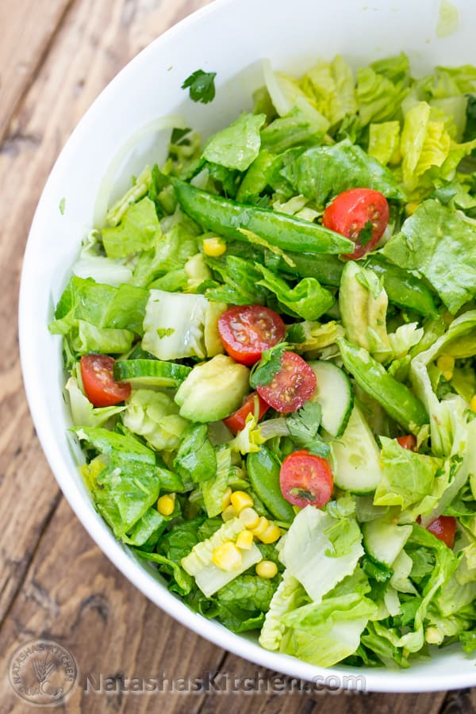

Mexican Salad

Description
This is an easy, excellent chopped Mexican salad. Mexican salads have a way of reviving your taste buds with all of the fresh lime juice and cilantro
Mexican Salad Ingredients
- 1 large head Romaine lettuce, rinsed, chopped and dried
- 1 cup Cherry tomatoes, halved
- 1/2 English cucumber, sliced
- 1/2 small yellow onion, thinly sliced
- 1 cup snap peas, whole, optional
- 1/2 cup corn kernels
- 1/3 bunch fresh cilantro
Lime Dressing Ingredients
- 1/3 Cup extra virgin olive oil
- Juice of 2 medium limes
- 1/4 - 1/2 tsp tabasco sauce, or to taste
- 1/2 tsp sea salt
- 1/8 tsp black pepper, freshly ground
Preparation
- Combine all salad dressing ingredients and shake or whisk. Set aside.
- Chop all salad ingredients and combine in a large salad bowl.
- Shake salad dressing again prior to serving and drizzle the top with as much salad dressing as you prefer. Toss salad together and enjoy!
- Serves 4-6.
Original recipe from Natasha's kitchen